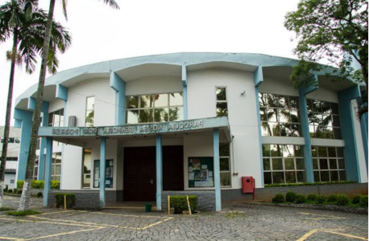

A Paróquia Nossa Senhora dos Pobres foi inaugurada em outubro de 1957, sendo administrada pela Congregação de Cristo Ressuscitado. Localizada no coração do Butantã, nossa paróquia tem sido um farol de fé e esperança para a comunidade há mais de 65 anos.
Senhora dos Pobres, cuja devoção teve origem nas aparições de Banneux, na Bélgica, em 1933, é nossa padroeira e guia. Ela nos ensina a cuidar dos mais necessitados e a viver o Evangelho com simplicidade e amor.
Atualmente, nossa comunidade é conduzida pelo Padre Paulo Solak, CR, que nos orienta com dedicação e carinho pastoral, continuando a missão de evangelização e serviço iniciada pelos primeiros padres da Congregação de Cristo Ressuscitado

Louvamos a Deus Através da música
Cuidado com o corpo e a alma
Celebrações e rituais sagrados
08:30 | 11:00 | 19:00
07:30 | 19:00
07:30 | 19:00
19:00
Quer servir, participar de uma pastoral ou colocar seus dons a serviço da comunidade? Entre em contato conosco